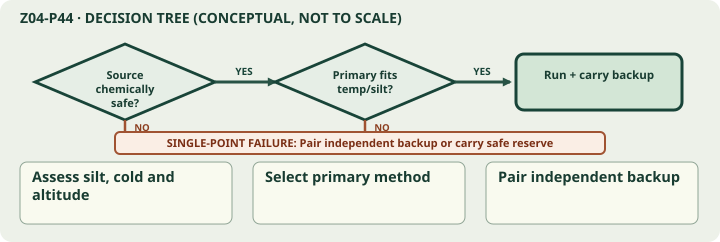

Z04-P44 · Water · New manuscript
Choose primary and backup treatment methods by route and elevation
Pair two complementary treatment methods before departure so cold, altitude, turbidity or gear failure does not leave the group stranded.
When it applies · Pre-trip water-system planning across summer trails, high-altitude routes, winter camps and emergency kits.
Equipment · Primary treatment method (e.g., cyst-rated filter or stove/pot) plus independent backup (e.g., chemical tablets or boiling vessel).

Actions
- Match your primary method to expected water turbidity, temperature, group size and fuel supply—remembering boiling requires 3 minutes above 6,500 feet.[W26, W02, W24]
- Choose a backup with a different failure mode (for example, chemical tablets or boiling to back up a freeze-vulnerable filter or battery-dependent UV wand).[W26, W28, W11]
- Verify that every container, stove fuel canister, battery and disinfectant packet needed for both systems is packed, compatible and tested before leaving home.[W26, E02, ED]
Failure recognition · Carrying two battery-powered devices in winter cold or relying solely on a hollow-fiber filter on a high-silt glacial or storm-swollen river.[W26, W28, W11]
Verify · Confirm you can execute your backup treatment completely independently if your primary device breaks, clogs or loses power.[W26, E02, ED]
Stop or change course · Do not start an extended remote route with only a single untested treatment device and no safe carried water reserve.[W09, W26, E02]
Evidence and editorial notes
- E02 · NPS · Ten Essentials (current web edition)
- Section: Navigation; insulation; emergency shelter; emergency food and water · Conditions: Outdoor trips; adjust kit to season and route
Support: Carry essential systems including navigation, insulation, light, water and emergency shelter.
Limitations: Carrying items without practice or cold-weather verification does not ensure readiness. · Conflicting evidence: None; baseline kit system architecture.
Editorial note: Supports failure-mode packing and kit verification cards. · Specialist reviewer: Field education and search and rescue
Primary source · checked 2026-11-24 - W02 · CDC · How to Make Water Safe in an Emergency (2024-09-19)
- Section: Boil > Steps for boiling water · Conditions: Microbiologically suspect water with acceptable chemical source; portable heat and safe vessel
Support: Clarify cloudy water first. Rolling boil for one minute; above 6,500 feet for three minutes. Cool and cover in sanitized containers.
Limitations: Does not remove dissolved metals, nitrates, fuel, or cyanotoxins. · Conflicting evidence: Older Track B B009 omitted the 6,500 ft threshold; CDC threshold governs.
Editorial note: Require explicit timer verification after rolling boil starts. · Specialist reviewer: Drinking-water safety and public health
Primary source · checked 2026-11-24 - W09 · CDC · Water Treatment Options When Hiking, Camping, or Traveling (current web edition)
- Section: Overview and water treatment methods · Conditions: Hiking or camping where no safe source is confirmed
Support: Even clear water can contain germs. Assess the supply and carry safe water or an appropriate treatment method.
Limitations: Visual clarity never detects microbes or dissolved chemical contaminants. · Conflicting evidence: None across CDC/NPS/EPA sources.
Editorial note: Reinforces clarity-is-not-potability invariant across all Z04 cards. · Specialist reviewer: Drinking-water safety and public health
Primary source · checked 2026-11-24 - W11 · CDC · Water Treatment Options When Hiking, Camping, or Traveling (current web edition)
- Section: Using light · Conditions: Portable UV disinfection device on a supported batch size of clear water
Support: Cloudiness interferes with UV. Use the device's stated volume, mixing and cycle instructions.
Limitations: Battery failure, cold battery voltage drop, or container UV opacity can silently defeat treatment. · Conflicting evidence: None; requires pre-clarification for turbid sources.
Editorial note: Requires verifying clarity, rated volume, and completed cycle indicator. · Specialist reviewer: Drinking-water treatment and equipment safety
Primary source · checked 2026-11-24 - W24 · USGS · Turbidity and Water (current web edition)
- Section: Turbidity and Water · optical definition and causes · Conditions: Cloudy, silt-laden, or storm-runoff streams and lakes
Support: Turbidity measures light scattering. Clay, silt and organic or biological material can contribute to turbidity.
Limitations: The USGS measurement is not evidence of potability, actual device clogging, or shielding magnitude. Follow validated treatment guidance. · Conflicting evidence: None; supports physical mechanism of pre-clarification.
Editorial note: Explains physical failure of filters and UV in turbid storm runoff. · Specialist reviewer: Hydrology and drinking-water treatment
Primary source · checked 2026-11-24 - W26 · NPS · Two Ways to Purify Water (current web edition)
- Section: Two Ways to Purify Water · Conditions: Backcountry water treatment planning in National Parks
Support: Boiling and chemical/filtration methods each have fuel, time, weight, and organism-coverage trade-offs; match the primary method and backup to route conditions and follow directions.
Limitations: Does not resolve chemical spills or algal toxins. · Conflicting evidence: Aligns with CDC-T altitude and parasite limits.
Editorial note: Supports primary-plus-backup water treatment selection in Z04. · Specialist reviewer: Backcountry water safety
Primary source · checked 2026-11-24 - W28 · Sawyer · Water Filtration FAQs (Current manufacturer FAQ)
- Section: Water filtration FAQ > filter freezing · Conditions: Sawyer wet hollow-fiber filters; other models follow their exact manufacturer instructions
Support: Freezing can damage a wetted filter. Sawyer advises replacing a filter suspected of freezing; visual inspection cannot establish its integrity.
Limitations: Do not extrapolate replacement or integrity-testing instructions to other products without their manuals. · Conflicting evidence: None; critical cold-weather filter failure mechanism.
Editorial note: Drives cold-weather filter protection and failure-recognition cards. · Specialist reviewer: Drinking-water treatment and cold-weather operations
Primary source · checked 2026-11-24
Source lineage · NPS water purification and CDC treatment; new manuscript · Classification · New manuscript.